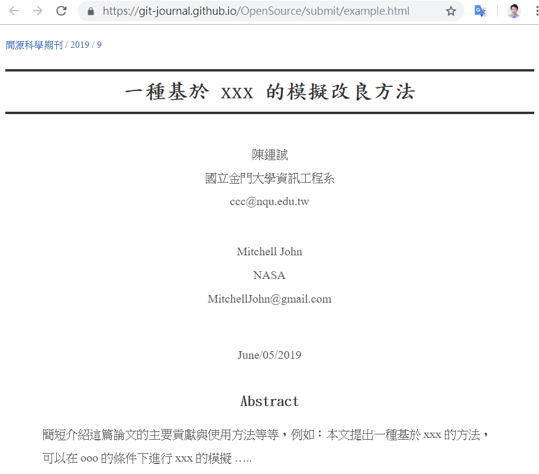

June/05/2019
本文提出一種基於 git 的學術投稿、期刊審查方法，該方法透過像 github 這樣的網路平台，讓投稿者與期刊之間能夠更順暢運作，也讓除了論文以外的學術資源，像是《原始碼、資料、還有測試工具》等資源，能夠更有效地公開並接受檢驗。
傳統學術運作方法是基於《紙本》的生態圈，採用《期刊-投稿》的方式進行。但是在網路與 web 技術開始改變各種領域的運作方式之後，這樣的模式就顯現出一些缺點，例如：
這些問題讓學術界陷入了困境，我們需要新的做法來解決這些問題！
為了改進這些缺點，我們想到可以參考目前 github 專案開發的運作模式，將之運用在論文出版上！
對於《期刊出版者》，他們可以採用 github 經營期刊，只要將《稿件樣板》與《論文建置工具》放上去，並要求投稿者必須將《稿件、資料、程式》等資源放入一個 github 專案中，然後再進行投稿。
投稿者將《稿件、資料、程式》一同放入專案中投稿之後，就可以透過 github issue 發訊息給《期刊出版者》，期刊出版者可以透過 issue 與投稿者討論稿件的審查情況，以及《稿件、資料、程式》是否有缺漏之類的問題，直到這些問題都已經釐清或解決之後，就可以決定是否要接受該論文的刊登。
當《期刊出版者》決定接受該論文刊登時，首先會對該論文的專案進行 fork 動作，這樣就能將論文的《稿件、資料、程式》等實驗環境長久保存，
為了達到上述目的，我們必須設計一組《稿件樣板》與《論文建置工具》，這組工具可以將《稿件原始碼》轉換為《呈現格式》。
目前的學術領域，最常使用的《原始稿件》格式是 TeX [1] ，這是由 Donald Knuth 所設計的一種論文格式，排版能力強大，大量的被使用在撰寫論文上，幾乎形成一種論文出版的標準格式，我們可以透過 LaTex, XeLatex, MikTex 等軟體將該格式轉換為 PDF 檔案，然後放上網路或印出為紙本發行。
但是在程式領域，特別是像 github 這樣的專案分享網站，最常使用的《文件撰寫格式》是 Markdown [2]， Markdown 格式經常被用來撰寫程式的說明文件，像是 README.md 等等，其中的附檔名 .md 是 markdown 的簡稱。
雖然 TeX 格式在學術界比較受歡迎，但是 Markdown 在程式領域卻較為通用，這讓我們很難取捨，到底應該採用哪個做為稿件樣板！
不過、只要透過工具轉換，我們可以兩者都使用，於是我們找到了 pandoc [3] 這款軟體，該軟體可以對 Markdown, TeX, PDF 等格式進行轉換，於是只要用 Markdown 撰寫，那麼轉換之後將可以同時得到 TeX 格式與 PDF 格式。
雖然 pandoc 可以轉換 Markdown 為 TeX, 也可以將 TeX 轉回 Markdown，但是由於 Markdown 是一種極為簡單的格式，支援功能遠比 TeX 為少，因此從 TeX 轉回 Markdown 勢必會喪失不少資訊。
我們根據《簡單易用、轉檔時不漏失資訊、對程式領域通用》這幾個特點，決定採用 Markdown 作為推薦格式。
但是採用 Markdown 為推薦格式，仍然必須面對《格式與功能都太過簡單》這個問題，例如《原始設計的 Markdown 並不支援表格、也不支援數學式》等等，但是表格和數學式在論文裏都是非常重要的，我們不可能用一種不支援表格與數學式的格式來撰寫論文。
還好在 Markdown 廣為使用之後，逐漸發展出一些延伸語法 [4]，這些語法也逐漸形成了某種標準 (雖然還是有些分歧性)，於是我們可以透過延伸的表格格式，以及從 TeX 借用過來的數學式寫法，為 Markdown 提供《表格與數學式》的功能。
這些功能在 pandoc 裏都已經被實作並支援了 [5]， pandoc 支援由 github 定義的 markdown 延伸語法 GFM [6] (該規格支援表格)，以及由 TeX 借用來的數學運算式，還支援用 YAML 這個語法來描述《結構性的描述欄位資訊》，像是《作者的姓名、任職單位、e-mail、完稿時間、摘要、論文關鍵字》等等。
以下是一份簡易的論文樣版 paper.md，該樣板一開始是 YAML 格式的論文描述資訊，接著是 Markdown 的內文，其中插入了表格、數學式還有圖片。
---
title: "一種基於 xxx 的模擬改良方法"
date: "June/05/2019"
author:
- name: 陳鍾誠
department: 國立金門大學資訊工程系
email: ccc@nqu.edu.tw
- name: Mitchell John
department: NASA
email: MitchellJohn@gmail.com
abstract: |
簡短介紹這篇論文的主要貢獻與使用方法等等，例如：本文提出一種基於 xxx 的方法，
可以在 ooo 的條件下進行 xxx 的模擬 .....
keyword: ["xxx", "ooo"]
url: https://github.com/ccckmit/xxx.git
---
## 簡介
在此描述您的作品或研究動機、背景 ...
## 文獻回顧
介紹一下目前其他人的研究成果並具體舉出文獻，
例如 @kour2014fast, @hadash2018estimate 等等， ....
接著介紹你的方法有何優勢等等 ...
## 研究方法
描述您的方法或技術，您也可以使用數學式將您的方法更清楚地描述出來！
$$
L(X;\theta)=P(X|\theta)=\sum_z P(X,z|\theta) \\
\arg\max_{\theta_{t+1}} \frac{\sum_i P(x_i|\theta)}{n}\\
$$
## 實驗結果
您可以用圖表展現實驗結果 ....

也可以用表格進行分析
實驗 | 正確率 | 說明
---------|--------------|------------------
方法 1 | 82.34% | 用 xxx 資料測試
方法 2 | 85.51% | 用 ooo 資料測試
方法 3 | 94.33% | 用 xxx 資料測試
## 結語
說明你的方法之優點與限制，還有甚麼需要改進的未來展望等等 ...
## 參考文獻另外、 pandoc 還支援了一個稱為 pandoc-citeproc 的文獻引用功能 [7] ，可以讓我們用 bibtex 儲存文獻，只要在 markdown 論文裏用 @引用標記 (例如上文中的 @kour2014fast, @hadash2018estimat 等等) ， pandoc 就會自動將這些文獻用標準格式放到最後面，這樣就可以支援《完整的論文撰寫語法》了。
下圖是上述《論文樣版》經 pandoc 轉換後以 HTML 和 PDF 兩種模式呈現在瀏覽器中的樣子，我們設計的樣板盡可能採用統一的學術風格呈現方式，但是讓 HTML 可以適應較小的手機畫面呈現方式。

雖然 pandoc 的功能已經設計得很好，格式也支援的很廣，但是我們在使用 pandoc 來創建論文撰寫工具的過程當中，還是碰到了一些障礙，其中有一些已經克服了，但是還有一些仍待克服，像是《HTML 中的數學公式與圖片無法在最右邊標號》等等的小瑕疵，仍然令人感覺不夠滿意。
不過這些瑕疵都可以用某些方式彌補，例如改在上方或下方標號等等，但這些是技術不足問題，只要逐步的改進，應該是可以克服的。
我們希望能透過《引入 github + markdown 到學術論文的撰寫、投稿、與期刊出版經營領域》，為學術界注入更多的活力，讓除了論文以外的資訊，也能被《論文撰寫者》與《期刊出版者》保存下來。
我們希望這樣的期刊出版方式，能夠被學術界所接受，讓知識能更完整的保存下來，也讓研究能更容易被驗證與比較，這或許能讓學術的進展更快速！
[1] 维基百科, “TeX — 维基百科, 自由的百科全书.” 2019 [Online]. Available: https://zh.wikipedia.org/w/index.php?title=TeX&oldid=54293748
[2] 维基百科, “Markdown — 维基百科, 自由的百科全书.” 2019 [Online]. Available: https://zh.wikipedia.org/w/index.php?title=Markdown&oldid=54553433
[3] 维基百科, “Pandoc — 维基百科, 自由的百科全书.” 2017 [Online]. Available: https://zh.wikipedia.org/w/index.php?title=Pandoc&oldid=46430325
[4] J. MacFarlane, “CommonMark spec,” 2019 [Online]. Available: https://spec.commonmark.org/
[5] J. MacFarlane, “Pandoc user’s guide.” 2019 [Online]. Available: https://pandoc.org/MANUAL.html
[6] github.com, “GitHub flavored markdown spec,” 2019 [Online]. Available: https://github.github.com/gfm/
[7] J. MacFarlane, “Pandoc-citeproc.” 2019 [Online]. Available: https://github.com/jgm/pandoc-citeproc/blob/master/man/pandoc-citeproc.1.md